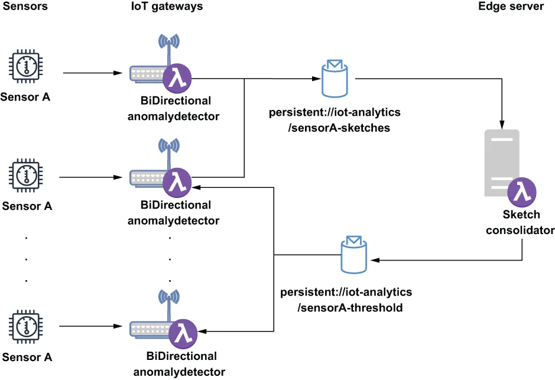

Consider the scenario in which you have multiple temperature sensors measuring the ambient temperature across your entire data center. Rather than comparing the current reading of a given individual sensor to its previous readings, you want to see how it compares to the previous readings of all of the other temperature sensors deployed across your data center. Obviously, this would provide a much more meaningful comparison, particularly in the case where the sensor readings gradually drifted higher or lower rather than suddenly, such as if one of your pieces of equipment was gradually overheating, and the temperature readings slowly rose from a safe range to a more dangerous level. In such a scenario, there might not be any single reading that is significantly large enough to be considered an anomaly, but compared to other similar sensors, all of the readings would be considered high.
设想这样一个场景：你有多个温度传感器，正在测量整个数据中心的环境温度。你并不想拿某个给定传感器当前的读数去和它自己先前的读数做比较，而是想看看它与部署在整个数据中心内所有其他温度传感器先前读数的比较结果如何。显然，这会提供一个有意义得多的比较，尤其是在传感器读数是逐渐漂移得更高或更低、而非突然变化的情况下——例如你的某台设备正在逐渐过热，温度读数从一个安全范围慢慢升到了一个更危险的水平。在这样的场景中，可能并不存在任何单个读数大到足以被视为异常；但与其他相似传感器相比，所有读数都会被认为是偏高的。
To perform a comparison across a much broader set of data would require the combination of data from potentially hundreds of different sensors. Therefore, we must first gather all of the data into a single location to calculate the statistics for the sensor group as a whole rather than individually. Fortunately, the data sketches used inside the AnomalyDetector function can be merged together rather easily to provide these types of statistics. A data sketch generated from a series of readings from a single sensor can be used to determine the ranking of any given sensor reading relative to all of the readings recorded in the sketch thus far. But if you combine 100 sketches, then you can use the resulting sketch to determine the ranking of any given sensor reading relative to all the readings across 100 sensors. This is a much more meaningful value and would solve the issue we are trying to address because we are comparing each sensor reading to all others across the entire factory.
要在范围大得多的一组数据上执行比较，就需要把来自可能多达数百个不同传感器的数据组合起来。因此，我们必须先把所有数据汇聚到单一位置，以便为这个传感器组整体（而非逐个传感器）计算统计量。所幸，AnomalyDetector 函数内部所使用的那些数据 sketch 可以相当容易地被合并在一起，以提供这类统计量。由一个传感器的一串读数所生成的一个数据 sketch，可以被用来确定任何给定传感器读数相对于该 sketch 迄今所记录的全部读数的排序。但如果你把 100 个 sketch 合并起来，那么你就可以用合并后的那个 sketch，来确定任何给定传感器读数相对于 100 个传感器全部读数的排序。这是一个有意义得多的值，并且能解决我们正试图处理的那个问题——因为我们是在把每个传感器读数与整个工厂内所有其他读数做比较。
To achieve this, we must first modify the existing AnomalyDetector function, as shown in the following listing, to periodically send a copy of its sketch to the edge servers so it can be merged with the sketches from all the other BiDirectionalAnomalyDetector function instances running on different IoT gateways.
为了做到这一点，我们必须先修改现有的 AnomalyDetector 函数，如下面这份清单所示，让它周期性地把自己 sketch 的一份副本发送到边缘服务器，以便它能与运行在各个不同 IoT 网关上的所有其他 BiDirectionalAnomalyDetector 函数实例所发来的 sketch 合并在一起。
Listing 12.9 Update AnomalyDetection function
public class BiDirectionalAnomalyDetector
implements Function<Double, Void> {
private boolean initialized = false;
private long publishInterval; ❶
private String reportingTopic; ❷
private String alertThresholdTopic; ❸
private double alertThreshold; ❹
private String remotePulsarUrl; ❺
private PulsarClient client;
private Producer<byte[]> producer; ❻
private Consumer<Double> consumer; ❼
private ExecutorService service = Executors.newFixedThreadPool(1); ❽
private ScheduledExecutorService executor =
Executors.newScheduledThreadPool(1); ❾
private UpdateDoublesSketch sketch;
@Override
public Void process(Double input, Context ctx) throws Exception {
if (!initialized) {
init(ctx);
launchReportingThread(); ❿
launchFeedbackConsumer(); ⓫
}
synchronized(sketch) { ⓬
getSketch().update(input);
if (getSketch().getRank(input) >= alertThreshold) {
react();
}
}
return null;
}
private void launchReportingThread() {
Runnable task = () -> {
synchronized(sketch) { ⓭
try {
if (getSketch() != null) {
getProducer().newMessage().value(getSketch().toByteArray()).send();
sketch.reset(); ⓮
}
} catch(final PulsarClientException ex) { /* Handle */}
}
};
executor.scheduleAtFixedRate(task,
publishInterval, publishInterval, TimeUnit.MINUTES); ⓯
}
private void launchFeedbackConsumer() {
Runnable task = () -> {
Message<Double> msg;
try {
while ((msg = getConsumer().receive()) != null) { ⓰
alertThreshold = msg.getValue(); ⓱
getConsumer().acknowledge(msg);
}
} catch (PulsarClientException ex) {/* Handle */}
};
service.execute(task); ⓲
}
private UpdateDoublesSketch getSketch() {
if (sketch == null) {
sketch = DoublesSketch.builder().build();
}
return sketch;
}
private Producer<byte[]> getProducer() throws PulsarClientException {
if (producer == null) {
producer = getEdgePulsarClient().newProducer(Schema.BYTES)
.topic(reportingTopic).create();
}
return producer;
}
private Consumer<Double> getConsumer() throws PulsarClientException {
if (consumer == null) {
consumer = getEdgePulsarClient().newConsumer(Schema.DOUBLE)
.topic(alertThresholdTopic).subscribe();
}
return consumer;
}
private void react() {
// Implementation specific
}
private PulsarClient getEdgePulsarClient() throws PulsarClientException {
...
}
protected void init(Context ctx) {
...
}
}
❶ Property that defines how often the local data sketch gets published (in minutes)
❶ 定义本地数据 sketch 被发布频率（以分钟计）的属性。
❷ Property that defines the topic name used to send the local data sketch to the edge server
❷ 定义用于把本地数据 sketch 发送到边缘服务器的主题名的属性。
❸ Property that defines the topic name used to receive the updated alert threshold from the edge server
❸ 定义用于从边缘服务器接收更新后的告警阈值的主题名的属性。
❹ Calculated alert threshold provided by the edge server
❹ 由边缘服务器提供的、计算出来的告警阈值。
❺ The URL for the Pulsar broker running on the edge server
❺ 运行在边缘服务器上的那个 Pulsar broker 的 URL。
❻ Producer for sending the data sketched to the edge server
❻ 用于把数据 sketch 发送到边缘服务器的 producer。
❼ Consumer for receiving updated alert threshold values from the edge server
❼ 用于从边缘服务器接收更新后的告警阈值的 consumer。
❽ Local thread pool where the consumer thread can run in the background
❽ 供 consumer 线程在后台运行的本地线程池。
❾ Local thread pool that invokes the publishing thread at a fixed interval (e.g., every five minutes)
❾ 以固定间隔（例如每五分钟）调用那个发布线程的本地线程池。
❿ Start the data sketch publishing thread just once.
❿ 只启动一次那个数据 sketch 发布线程。
⓫ Start the alert threshold consuming thread just once.
⓫ 只启动一次那个告警阈值消费线程。
⓬ Create an exclusive lock on the data sketch when writing the data.
⓬ 在写入数据时，对数据 sketch 加一把排他锁。
⓭ Create an exclusive lock on the data sketch when publishing the data.
⓭ 在发布数据时，对数据 sketch 加一把排他锁。
⓮ Clear all of the data from the sketch.
⓮ 清空 sketch 中的全部数据。
⓯ Schedule the publishing task to run at the fixed interval specified by the configuration properties.
⓯ 把这个发布任务安排为按配置属性所指定的固定间隔运行。
⓰ Wait for incoming alert threshold messages.
⓰ 等待 incoming 的告警阈值消息。
⓱ Update the alert threshold with the provided value.
⓱ 用所提供的值更新告警阈值。
⓲ Launch the alert threshold consuming thread in the background.
⓲ 在后台启动那个告警阈值消费线程。
The BiDirectionalAnomalyDetector function still listens for incoming sensor readings and adds them to a local data sketch object before comparing the sensor reading to the anomaly threshold to determine whether immediate action must be taken. However, it also creates two additional background threads to communicate with the SketchConsolidator function running on the edge server. This function relies on the Java ScheduledThreadExecutor to ensure that the local data sketches are published at a periodic interval (e.g., every five minutes), while the other thread is used to continuously monitor the feedback topic for any updates to the alert threshold value. Next, we must create a new Pulsar function, like the one shown in listing 12.10, that will run on the edge servers and will receive these inbound sketches and merge them together to produce a larger, more accurate sketch that encompasses data from all of the sensors within a given sensor family.
BiDirectionalAnomalyDetector 函数仍然会监听 incoming 的传感器读数，并把它们加进一个本地数据 sketch 对象，然后再把该传感器读数与异常阈值做比较，以决定是否需要立即采取行动。不过，它还会另外创建两条后台线程，用来与运行在边缘服务器上的 SketchConsolidator 函数通信。这个函数依靠 Java 的 ScheduledThreadExecutor 来确保本地数据 sketch 以周期性间隔（例如每五分钟）被发布出去；而另一条线程则被用来持续监控那个反馈主题，看告警阈值是否有任何更新。接下来，我们必须创建一个新的 Pulsar 函数，类似于清单 12.10 中所示的那个——它将运行在边缘服务器上，接收这些 inbound 的 sketch 并把它们合并在一起，以产出一个更大、更准确的 sketch，涵盖某个给定传感器族内全部传感器的数据。
Listing 12.10 Data sketch merging function
import org.apache.datasketches.memory.Memory;
import org.apache.datasketches.quantiles.DoublesSketch;
import org.apache.datasketches.quantiles.DoublesUnion;
import org.apache.pulsar.functions.api.Context;
import org.apache.pulsar.functions.api.Function;
public class SketchConsolidator implements Function<byte[], Double> {
private DoublesSketch consolidated; ❶
@Override
public Double process(byte[] bytes, Context ctx) throws Exception {
DoublesSketch iotGatewaySketch =
DoublesSketch.wrap(Memory.wrap(bytes)); ❷
DoublesUnion union = DoublesUnion.builder().build(); ❸
union.update(iotGatewaySketch); ❹
union.update(consolidated); ❺
consolidated = union.getResult(); ❻
return consolidated.getQuantile(0.99); ❼
}
}
❶ Data sketch that contains data from all of the sensors
❶ 包含来自所有传感器数据的数据 sketch。
❷ Convert the incoming bytes to a data sketch.
❷ 把传入的字节转换成一个数据 sketch。
❸ Build a new object used to merge multiple data sketches.
❸ 构造一个用于合并多个数据 sketch 的新对象。
❹ Add the incoming data sketch to the union object.
❹ 把传入的数据 sketch 加进这个 union 对象。
❺ Add the existing consolidated data sketch to the union object.
❺ 把现有的那个已合并数据 sketch 加进这个 union 对象。
❻ Update the consolidated data sketch to be equal to the result of the merge.
❻ 把这个已合并数据 sketch 更新为合并的结果。
❼ Publish the newly calculated threshold value for the 99th percentile.
❼ 发布新计算出的第 99 百分位数的阈值。
The interaction between these two Pulsar functions is depicted in figure 12.13, which shows both of the communication channels used to send data up from the BiDirectionalAnomalyDetector functions running on all of the IoT gateways to the SketchConsolidator function running on the edge servers, and the channel used to send the newly calculated threshold from the SketchConsolidator function back down to the BiDirectionalAnomalyDetector function instances running on the IoT gateways.
这两个 Pulsar 函数之间的交互如图 12.13 所示：图中既展示了用于把数据从运行在所有 IoT 网关上的 BiDirectionalAnomalyDetector 函数向上发送到运行在边缘服务器上的 SketchConsolidator 函数的那两条通信通道，也展示了用于把新计算出的阈值从 SketchConsolidator 函数向下回送给运行在各个 IoT 网关上的 BiDirectionalAnomalyDetector 函数实例的那条通道。

Figure 12.13 A copy of the BiDirectionalAnomalyDetector function will run on each IoT gateway and publish its locally calculated data sketches to the same geo-replicated topic. The SketchConsolidator function will consume these sketches and merge them together before publishing the cutoff value for the 99th percentile value to a different geo-replicated topic. The BiDirectionalAnomalyDetector functions will consume messages from this topic and use the published value as the new anomaly threshold for the sensor reading.
图 12.13 每个 IoT 网关上都会运行一份 BiDirectionalAnomalyDetector 函数，并把自己本地计算出来的数据 sketch 发布到同一个异地复制主题。SketchConsolidator 函数会消费这些 sketch 并把它们合并在一起，然后把第 99 百分位数值的截止值发布到另一个异地复制主题。而各个 BiDirectionalAnomalyDetector 函数会消费这个主题中的消息，并把所发布的那个值用作该传感器读数新的异常阈值。
The SketchConsolidator function should be configured to listen to the geo-replicated topic where all of the BiDirectionalAnomalyDetector functions will be publishing their respective sketches. As you can see from the code in listing 12.10, once the data sketches have been merged, we use the newly created object to determine the exact value that represents the threshold of the 99th percentile of all sensor readings. We then send this value back to the BiDirectionalAnomalyDetector functions rather than the entire sketch (to save space and bandwidth) so they can use this newly calculated value as their alert threshold instead of the locally calculated threshold.
SketchConsolidator 函数应当被配置为监听那个异地复制主题——所有 BiDirectionalAnomalyDetector 函数都会把自己的 sketch 发布到那里。从清单 12.10 的代码中可以看到，一旦这些数据 sketch 被合并完毕，我们就用这个新创建的对象来确定那个精确值——它代表着全部传感器读数的第 99 百分位数所对应的阈值。随后我们把这个值（而不是整个 sketch，以节省空间和带宽）回送给各个 BiDirectionalAnomalyDetector 函数，好让它们能够用这个新计算出的值、而不是本地计算出的阈值，来作为自己的告警阈值。